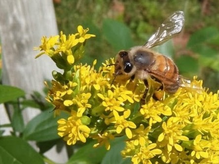
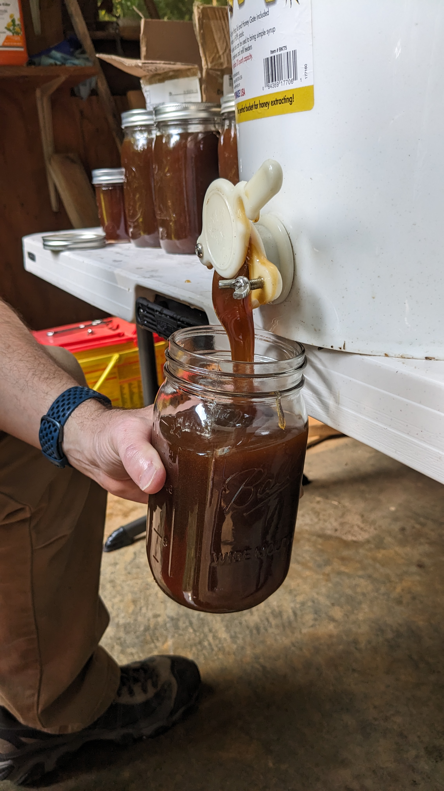

Our Hard Workers
Italian honeybees on the comb.

The Apiary
Hives resting in the Cherry Log shade.

Liquid Gold
Freshly harvested mountain honey.

The Craft
Traditional tools of the trade.

Wildflower Forage
Where the flavor begins.

The Harvest
Hand-extracted and unfiltered.